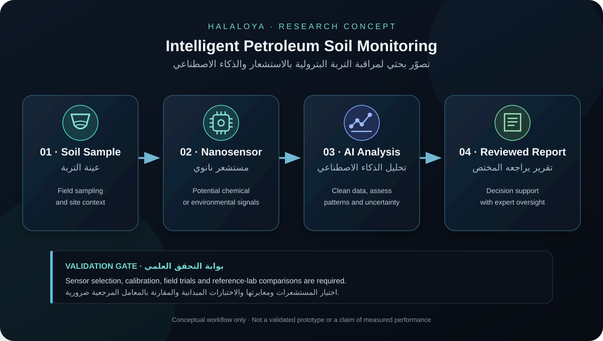

Petroleum Site & Soil Monitoring
Exploring how environmental sampling and sensor readings could support assessment of soil conditions around industrial and petroleum facilities.
An interdisciplinary research concept exploring how nanotechnology, advanced sensing and artificial intelligence could work together to analyze soil and environmental conditions related to petroleum and industrial applications.
← Back to HalaLoyaThe research concept explores whether nanoscale sensing technologies combined with artificial intelligence could provide new approaches to detecting, classifying and interpreting environmental signals. The objective is not simply to collect data, but to investigate how AI could transform complex sensor measurements into useful insights for scientific and industrial decision-making.
The concept sits at the intersection of several technological fields.
Exploring nanoscale materials and sensing approaches capable of detecting chemical, physical or environmental signals.
Using machine learning and AI methods to identify patterns, classify signals and interpret complex sensor data.
Exploring methods for analyzing soil and environmental conditions that may be relevant to industrial and petroleum-related research.
Investigating potential applications of intelligent sensing and analysis in petroleum fields and other complex industrial environments.
Sensors collect environmental or chemical signals from the target environment.
Raw measurements are processed, cleaned and prepared for analysis.
AI models examine patterns and relationships within the data.
The resulting analysis can support scientific interpretation and future decision-support systems.
Any future implementation would require careful validation, scientific testing, environmental consideration, data quality assessment and responsible use of AI-generated conclusions.
This project is currently a research and exploration concept. The scientific feasibility, sensing technologies, experimental architecture and AI methodology require further investigation and validation before practical implementation.
The long-term vision is to explore intelligent sensing systems that can connect physical-world measurements with advanced AI analysis, creating new possibilities for environmental science, industrial monitoring and future technological research.
Visual references for the proposed research direction: petroleum-site soil assessment, nanoscale sensing, AI-supported data interpretation and a conceptual monitoring workflow.

Exploring how environmental sampling and sensor readings could support assessment of soil conditions around industrial and petroleum facilities.

Investigating potential sensing materials and approaches for detecting selected chemical or environmental signals.

A conceptual view of the electronic and data-processing layer between sensing hardware and AI analysis.

In a future validated workflow, AI could help classify readings, flag patterns and support expert review—not replace field testing.
Image note: these are illustrative reference photographs, not photographs of a HalaLoya prototype, verified nanosensors or experimental results.
© 2026 Hala Hashem / HalaLoya. Unless permitted by applicable law, do not reproduce, republish, redistribute, modify or use this page’s original text commercially without prior written permission. Short academic quotations must be properly attributed.
© 2026 هالة هاشم / هالالويا. ما لم يسمح القانون المعمول به، لا يجوز نسخ النص الأصلي في هذه الصفحة أو إعادة نشره أو توزيعه أو تعديله أو استخدامه تجاريًا دون إذن كتابي مسبق. يجب توثيق الاقتباسات الأكاديمية القصيرة توثيقًا مناسبًا.
This notice does not replace applicable law or any relevant publication, conference or intellectual-property terms. | لا يحل هذا التنبيه محل القانون المعمول به أو شروط النشر أو المؤتمرات أو الملكية الفكرية ذات الصلة.
For research, scientific collaboration and technology opportunities, contact HalaLoya.
Back to HalaLoya